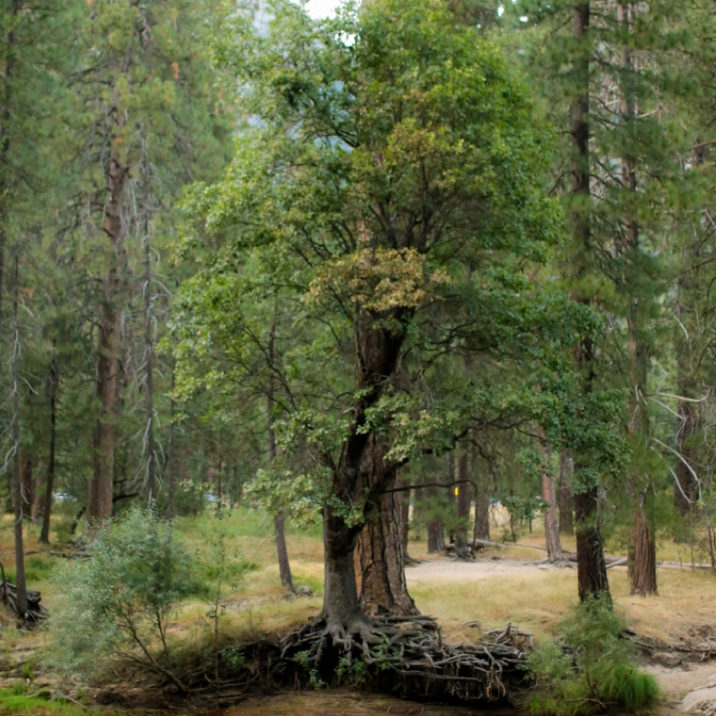
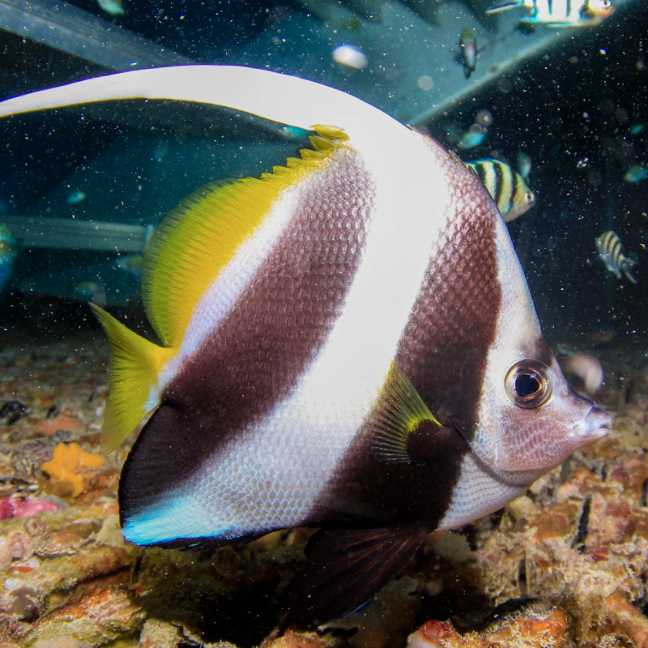
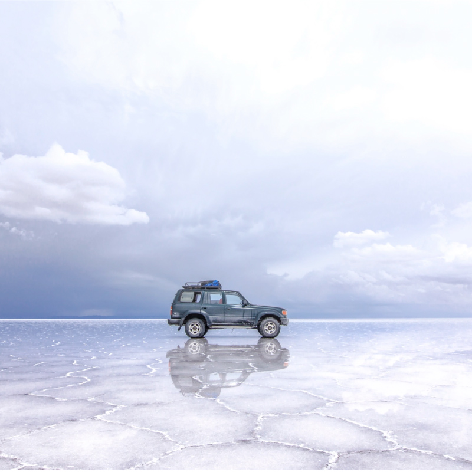
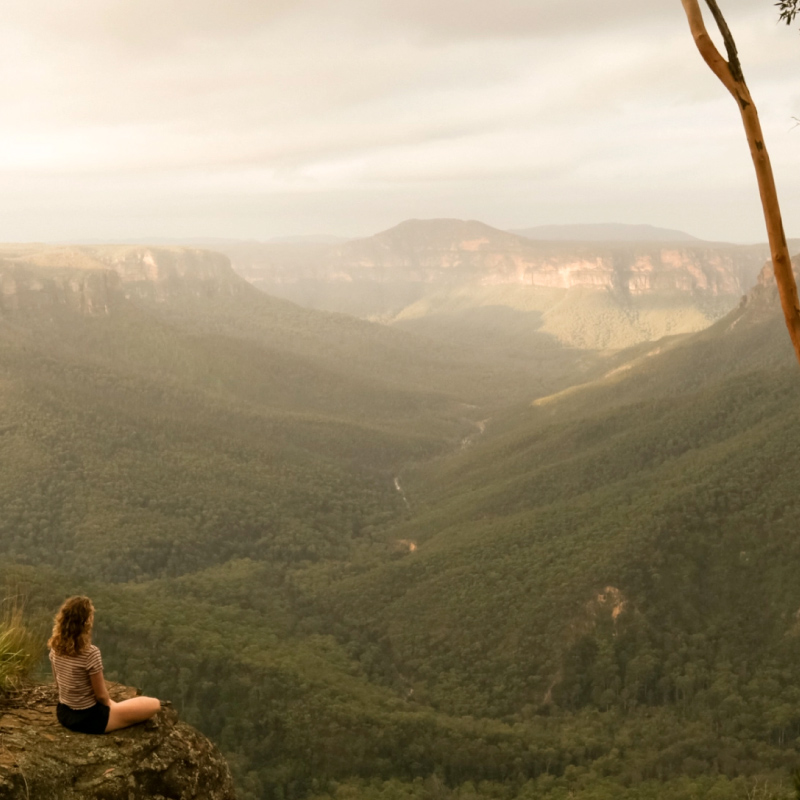

Aca va a haber videos, podcast, imagenes de los proyectos que se hicieron y se están haciendo para YSDM
video, que será parte del manifiesto de YSDM
- agua - water - acqua - eau - wai - amanzi - wasser - agua - water - acqua - eau - wai - amanzi - wasser - agua - water - acqua - eau - wai - amanzi - wasser -
- tierra - land - terra - Āina - whenua - 土地 - tierra - land - terra - Āina - whenua - 土地 tierra - land - terra - Āina - whenua - 土地 - tierra - land - terra - Āina - whenua - 土地
- fuego - fire - 火 - Feu - Feuer - ahi - fuoco - 火 - ignis - ahi - fogo - fuego - fire - 火 - Feu - Feuer - ahi - fuoco - 火 - ignis - ahi - fogo - fuego - fire - 火 - Feu - Feuer - ahi -
- aire - air - 空气 - Luft - ea - 空気 - caeli - hau - ar - aria - aire - air - 空气 - Luft - ea - 空気 - caeli - hau - ar - aria - aire - air - 空气 - Luft - ea - 空気 - caeli - hau - ar



